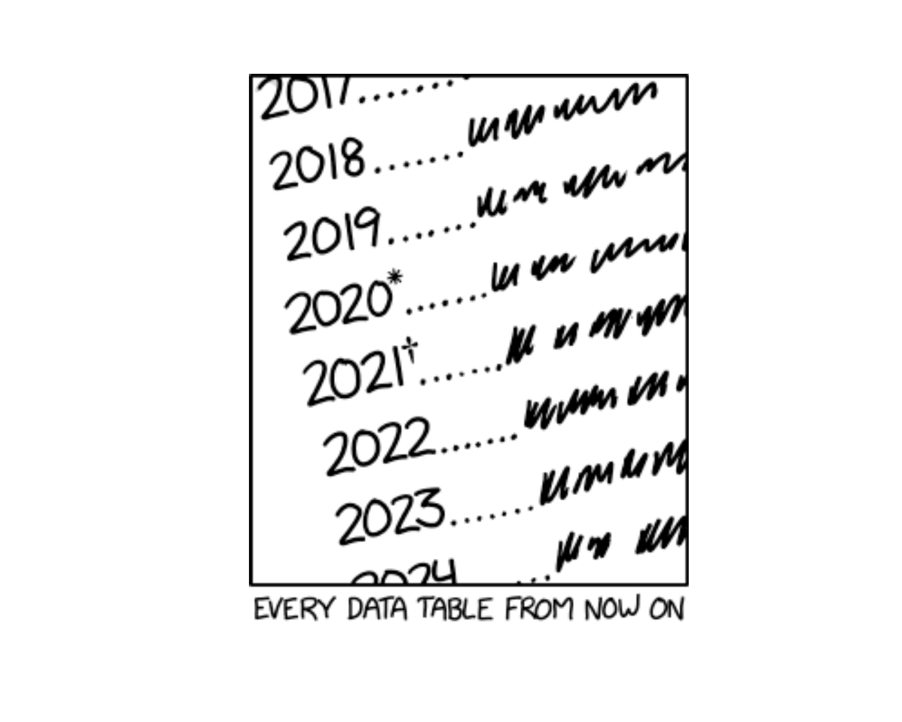
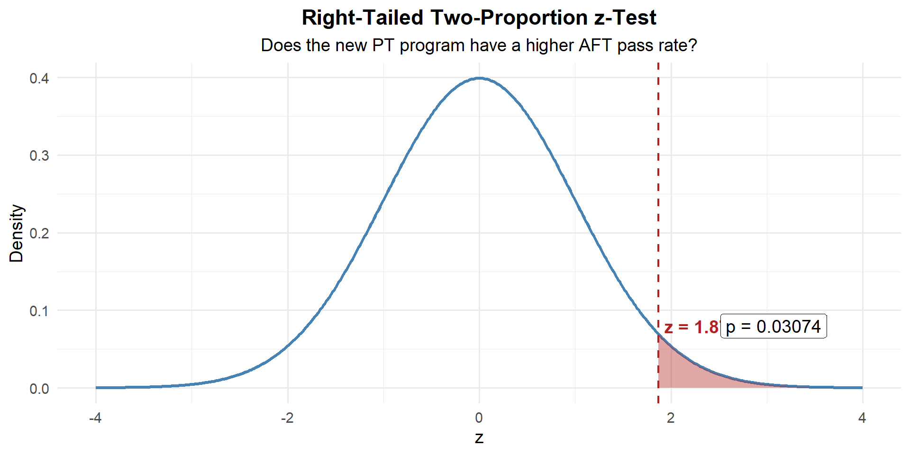
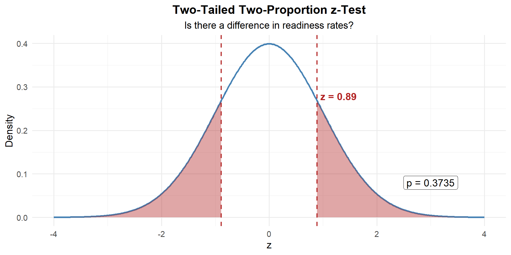

Lesson 25: Two Population Proportions

WPR II Information
ImportantWPR II — Lesson 27
- Review: 175 points — look at your WPR I to see what we told you before the WPR
- Covers: Concepts from Lessons 17–26
- Time: 55 minutes
- Authorized: Course Statistics Reference Card (SRC) and the issued calculator
- Technology — R-Lite (
pt,qt,pnorm,qnormonly), no internet, no electronic devices - Round all numbers to three significant digits
Study Materials
What We Did: Lessons 17–24
NoteLesson 17: Central Limit Theorem
The Central Limit Theorem (CLT): If \(X_1, X_2, \ldots, X_n\) are iid with mean \(\mu\) and standard deviation \(\sigma\), then for large \(n\):
\[\bar{X} \sim N\left(\mu, \frac{\sigma^2}{n}\right)\]
Standard Error of the Mean: \(\sigma_{\bar{X}} = \frac{\sigma}{\sqrt{n}}\)
Rule of thumb: \(n \geq 30\) unless the population is already normal.
NoteLesson 18: Confidence Intervals I
Confidence Interval for a Mean:
| Formula | When to Use | |
|---|---|---|
| Large sample (\(n \geq 30\)) | \(\bar{X} \pm z_{\alpha/2} \cdot \dfrac{\sigma}{\sqrt{n}}\) | Random sample, independence, \(s \approx \sigma\) |
| Small sample (\(n < 30\)) | \(\bar{X} \pm t_{\alpha/2, n-1} \cdot \dfrac{s}{\sqrt{n}}\) | Random sample, independence, population ~ Normal |
Key ideas: Higher confidence → wider interval. Larger \(n\) → narrower interval.
NoteLesson 19: Confidence Intervals II
Confidence Interval for a Proportion:
\[\hat{p} \pm z_{\alpha/2} \cdot \sqrt{\frac{\hat{p}(1-\hat{p})}{n}}\]
Conditions: \(n\hat{p} \geq 10\) and \(n(1-\hat{p}) \geq 10\)
Interpretation: “We are C% confident that [interval] captures the true [parameter in context].” The confidence level describes the method’s long-run success rate, not the probability any single interval is correct.
NoteLesson 20: Intro to Hypothesis Testing
Every hypothesis test follows four steps:
- State hypotheses: \(H_0\) (null — status quo) vs. \(H_a\) (alternative — what we want to show)
- Compute a test statistic: How far is our sample result from what \(H_0\) predicts?
- Find the \(p\)-value: If \(H_0\) were true, how likely is a result this extreme or more?
- Make a decision: If \(p \leq \alpha\), reject \(H_0\). If \(p > \alpha\), fail to reject \(H_0\).
NoteLesson 21: One Sample t-Test & One-Proportion z-Test
One-sample \(t\)-test for a mean (\(\sigma\) unknown):
\[t = \frac{\bar{x} - \mu_0}{s / \sqrt{n}}, \qquad df = n - 1\]
One-proportion \(z\)-test:
\[z = \frac{\hat{p} - p_0}{\sqrt{\dfrac{p_0(1 - p_0)}{n}}}\]
Conditions for proportions: \(np_0 \geq 10\) and \(n(1-p_0) \geq 10\) (use \(p_0\), not \(\hat{p}\)!)
NoteLesson 22: Two-Sample z-Test (Large Samples)
Two-sample \(z\)-test for means (\(n_1 \geq 30\) and \(n_2 \geq 30\)):
\[z = \frac{(\bar{x}_1 - \bar{x}_2) - \Delta_0}{\sqrt{\dfrac{s_1^2}{n_1} + \dfrac{s_2^2}{n_2}}}\]
Conditions: Large samples (\(n_1, n_2 \geq 30\)), random samples from two separate groups.
CI for \(\mu_1 - \mu_2\): \((\bar{x}_1 - \bar{x}_2) \pm z_{\alpha/2} \cdot SE\)
NoteLesson 23: Two-Sample t-Test (Small Samples)
Two-sample \(t\)-test (small samples): Same formula as the \(z\)-test, but use \(t\)-distribution:
\[t = \frac{(\bar{x}_1 - \bar{x}_2) - \Delta_0}{\sqrt{\dfrac{s_1^2}{n_1} + \dfrac{s_2^2}{n_2}}}, \qquad df = \frac{\left(\dfrac{s_1^2}{n_1} + \dfrac{s_2^2}{n_2}\right)^2}{\dfrac{\left(s_1^2/n_1\right)^2}{n_1 - 1} + \dfrac{\left(s_2^2/n_2\right)^2}{n_2 - 1}}\]
Conditions: Random samples from two separate groups, both populations approximately normal.
NoteLesson 24: Paired t-Test
Paired data arise when the same subjects are measured twice (or matched one-to-one). Compute differences, then run a one-sample \(t\)-test:
\[t = \frac{\bar{d} - \Delta_0}{s_d / \sqrt{n}}, \qquad df = n - 1\]
CI for \(\mu_d\): \(\bar{d} \pm t_{\alpha/2, \, n-1} \cdot \dfrac{s_d}{\sqrt{n}}\)
Why pair? Pairing removes between-subject variability, giving more power to detect a real effect.
What We’re Doing: Lesson 25
Objectives
- Check large-sample conditions for two proportions
- Test \(p_1 - p_2\) using pooled SE
- Construct and interpret a CI for \(p_1 - p_2\)
Required Reading
Devore, Section 9.4
DMath Basketball!!
Math vs DMI
NotePreviously 13-5
13-6

NotePreviously 13-6
13-7 🏆
March Madness Bracket Challenge
Fill out your tournament bracket and earn up to 10 bonus points based on your predictions.
How to participate
- Go to the bracket app
- Click Register — pick cadets as your group
- Fill out all 63 games — click a team to advance them through each round
- Set your confidence (50–100%) on each pick — click a picked team to adjust
- Write your strategy in the “Your Strategy” box — explain what’s driving your picks
- Each game locks at its tipoff
Scoring
\[\text{score} = \pm\;2\left(\frac{\text{confidence}}{100} - 0.5\right)^2 \times \text{multiplier}\]
- + if correct, − if wrong. A 50% pick earns 0 points either way. Highest total score wins.
- Higher confidence = bigger reward if right, bigger penalty if wrong (90% → ±0.32, 75% → ±0.13)
- Correct picks earn the round multiplier (1x → 2x → 4x → 8x → 16x → 32x). Wrong picks always score at 1x.
- You can change future-round picks after results come in, but your multiplier resets to 1x at the point of change and doubles each round after.
Bonus points
| Category | Points |
|---|---|
| Enter + write your strategy | 2 |
| Beat LTC Turner | 2 |
| 1st place | 6 |
| 2nd place | 5 |
| 3rd place | 4 |
| 4th place | 3 |
| 5th place | 2 |
| 6th place | 1 |
The Takeaway for Today
ImportantToday’s Key Ideas
Comparing two proportions — the same four-step process, now with proportions instead of means.
Pooled proportion (used in hypothesis tests):
\[\hat{p} = \frac{x_1 + x_2}{n_1 + n_2}\]
Test statistic:
\[z = \frac{(\hat{p}_1 - \hat{p}_2) - \Delta_0}{\sqrt{\hat{p}(1-\hat{p})\left(\dfrac{1}{n_1} + \dfrac{1}{n_2}\right)}}\]
CI for \(p_1 - p_2\) (uses unpooled SE):
\[(\hat{p}_1 - \hat{p}_2) \pm z_{\alpha/2} \cdot \sqrt{\frac{\hat{p}_1(1-\hat{p}_1)}{n_1} + \frac{\hat{p}_2(1-\hat{p}_2)}{n_2}}\]
Conditions: \(n_1 \hat{p}_1 \geq 10\), \(n_1(1-\hat{p}_1) \geq 10\), \(n_2 \hat{p}_2 \geq 10\), \(n_2(1-\hat{p}_2) \geq 10\)
From One Proportion to Two
One Proportion (L22)
\[z = \frac{\hat{p} - p_0}{\sqrt{\dfrac{p_0(1-p_0)}{n}}}\]
Two Means (L22–23)
\[t = \frac{(\bar{x}_1 - \bar{x}_2) - \Delta_0}{\sqrt{\dfrac{s_1^2}{n_1} + \dfrac{s_2^2}{n_2}}}\]
Two Proportions (Today)
\[z = \frac{(\hat{p}_1 - \hat{p}_2) - \Delta_0}{\sqrt{\hat{p}(1-\hat{p})\left(\dfrac{1}{n_1} + \dfrac{1}{n_2}\right)}}\]
Same structure every time: estimate − null value, divided by SE. Today we just plug in proportions instead of means.
The Setup
We have two independent groups:
| Group 1 | Group 2 | |
|---|---|---|
| Sample size | \(n_1\) | \(n_2\) |
| Successes | \(x_1\) | \(x_2\) |
| Sample proportion | \(\hat{p}_1 = x_1 / n_1\) | \(\hat{p}_2 = x_2 / n_2\) |
Parameter of interest: \(p_1 - p_2\) (the difference in population proportions)
The Pooled Proportion
ImportantWhy Pool?
Under \(H_0: p_1 = p_2\), we assume the two populations have the same true proportion. Our best estimate of that common proportion is to pool the data:
\[\hat{p} = \frac{x_1 + x_2}{n_1 + n_2}\]
This is just the overall success rate if we combine both groups.
WarningPooled vs. Unpooled
- Hypothesis test: Use the pooled proportion \(\hat{p}\) in the SE (because \(H_0\) says \(p_1 = p_2\))
- Confidence interval: Use unpooled (each group’s own \(\hat{p}_i\)) — we’re not assuming they’re equal
Two-Proportion z-Test
ImportantTwo-Proportion z-Test
Hypotheses: \(H_0: p_1 - p_2 = 0\) vs. \(H_a: p_1 - p_2 \neq 0\) (or \(<\) or \(>\))
Test statistic:
\[z = \frac{(\hat{p}_1 - \hat{p}_2) - \Delta_0}{\sqrt{\hat{p}(1-\hat{p})\left(\dfrac{1}{n_1} + \dfrac{1}{n_2}\right)}}\]
where \(\hat{p} = \dfrac{x_1 + x_2}{n_1 + n_2}\)
Conditions: \(n_1 \hat{p} \geq 10\), \(n_1(1-\hat{p}) \geq 10\), \(n_2 \hat{p} \geq 10\), \(n_2(1-\hat{p}) \geq 10\)
Example 1: New PT Program — AFT Pass Rate
A brigade S3 wants to know if a new PT program increases the proportion of Soldiers passing the AFT. Two battalions are compared — one used the new program, one kept the old:
| New Program | Old Program | |
|---|---|---|
| \(n\) | 200 | 200 |
| Passed | 160 | 140 |
| \(\hat{p}\) | 0.800 | 0.700 |
Compute the pooled proportion:
\[\hat{p} = \frac{x_1 + x_2}{n_1 + n_2} = \frac{160 + 140}{200 + 200} = \frac{300}{400} = 0.750\]
Check conditions:
- \(n_1 \hat{p} = 200(0.750) = 150.0 \geq 10\) ✓
- \(n_1(1-\hat{p}) = 200(0.250) = 50.0 \geq 10\) ✓
- \(n_2 \hat{p} = 200(0.750) = 150.0 \geq 10\) ✓
- \(n_2(1-\hat{p}) = 200(0.250) = 50.0 \geq 10\) ✓
All conditions met — the two-proportion \(z\)-test is appropriate.
Step 1: State the Hypotheses
The S3 wants to show the new program is better (higher pass rate). This is right-tailed:
\[H_0: p_1 - p_2 = 0 \qquad \text{vs.} \qquad H_a: p_1 - p_2 > 0\]
Step 2: Compute the Test Statistic
\[z = \frac{(\hat{p}_1 - \hat{p}_2) - \Delta_0}{\sqrt{\hat{p}(1-\hat{p})\left(\dfrac{1}{n_1} + \dfrac{1}{n_2}\right)}}\]
where \(\Delta_0 = 0\) comes from our null hypothesis \(H_0: p_1 - p_2 = 0\).
\[z = \frac{(0.800 - 0.700) - 0}{\sqrt{0.750(0.250)\left(\dfrac{1}{200} + \dfrac{1}{200}\right)}} = \frac{0.100}{0.0433} = 2.309\]
Step 3: Find the \(p\)-Value

p_value <- 1 - pnorm(z_stat)
p_value[1] 0.03060637Step 4: Decide and Conclude
\(p = 0.0306 \leq 0.05\). We reject \(H_0\). At the 5% significance level, there is sufficient evidence that the new PT program has a higher AFT pass rate. The new program had an 80% pass rate compared to 70% for the old program.
Confidence Interval for \(p_1 - p_2\)
ImportantCI for Two Proportions
\[(\hat{p}_1 - \hat{p}_2) \pm z_{\alpha/2} \cdot \sqrt{\frac{\hat{p}_1(1-\hat{p}_1)}{n_1} + \frac{\hat{p}_2(1-\hat{p}_2)}{n_2}}\]
Notice: The CI uses the unpooled SE — each group keeps its own \(\hat{p}\).
\[(0.800 - 0.700) \pm 1.960 \cdot \sqrt{\frac{0.800(0.200)}{200} + \frac{0.700(0.300)}{200}} = 0.100 \pm 1.960(0.0430) = 0.100 \pm 0.084\]
\[(0.016,\; 0.184)\]
We are 95% confident that the true difference in pass rates (New \(-\) Old) is between \(0.016\) and \(0.184\). The entire interval is above zero — consistent with rejecting \(H_0\).
Example 2: Company Readiness Rates
A battalion commander compares two companies’ Soldier readiness rates. Is there a difference?
| Alpha Co | Bravo Co | |
|---|---|---|
| \(n\) | 85 | 90 |
| Ready | 51 | 48 |
| \(\hat{p}\) | 0.600 | 0.533 |
Compute the pooled proportion:
\[\hat{p} = \frac{x_1 + x_2}{n_1 + n_2} = \frac{51 + 48}{85 + 90} = \frac{99}{175} = 0.566\]
Check conditions:
- \(n_1 \hat{p} = 85(0.566) = 48.1 \geq 10\) ✓
- \(n_1(1-\hat{p}) = 85(0.434) = 36.9 \geq 10\) ✓
- \(n_2 \hat{p} = 90(0.566) = 50.9 \geq 10\) ✓
- \(n_2(1-\hat{p}) = 90(0.434) = 39.1 \geq 10\) ✓
All conditions met — the two-proportion \(z\)-test is appropriate.
Step 1: State the Hypotheses
The commander just wants to know if there’s a difference — two-tailed:
\[H_0: p_1 - p_2 = 0 \qquad \text{vs.} \qquad H_a: p_1 - p_2 \neq 0\]
Step 2: Compute the Test Statistic
\[z = \frac{(\hat{p}_1 - \hat{p}_2) - \Delta_0}{\sqrt{\hat{p}(1-\hat{p})\left(\dfrac{1}{n_1} + \dfrac{1}{n_2}\right)}} = \frac{(0.600 - 0.533) - 0}{\sqrt{0.566(0.434)\left(\dfrac{1}{85} + \dfrac{1}{90}\right)}} = \frac{0.067}{0.0750} = 0.889\]
Step 3: Find the \(p\)-Value
Two-tailed — shade both sides:

p_value <- 2 * (1 - pnorm(abs(z_stat)))
p_value[1] 0.3738575Step 4: Decide and Conclude
\(p = 0.3739 > 0.05\). We fail to reject \(H_0\). At the 5% significance level, there is not sufficient evidence of a difference in readiness rates between Alpha and Bravo companies.
Confidence Interval
\[(0.600 - 0.533) \pm 1.960 \cdot \sqrt{\frac{0.600(0.400)}{85} + \frac{0.533(0.467)}{90}} = 0.067 \pm 1.960(0.0748) = 0.067 \pm 0.147\]
\[(-0.080,\; 0.214)\]
We are 95% confident that the true difference in readiness rates (Alpha \(-\) Bravo) is between \(-0.080\) and \(0.214\). The interval contains zero — consistent with failing to reject \(H_0\).
The Inference Toolkit (Updated)
NoteSummary of Confidence Intervals
| One-Sample Mean (Large) | One-Sample Mean (Small) | One Proportion | Two-Sample Mean | Paired Mean | Two Proportions | |
|---|---|---|---|---|---|---|
| Parameter | \(\mu\) | \(\mu\) | \(p\) | \(\mu_1 - \mu_2\) | \(\mu_d\) | \(p_1 - p_2\) |
| Formula | \(\bar{x} \pm z_{\alpha/2} \cdot \dfrac{\sigma}{\sqrt{n}}\) | \(\bar{x} \pm t_{\alpha/2,\, n-1} \cdot \dfrac{s}{\sqrt{n}}\) | \(\hat{p} \pm z_{\alpha/2} \cdot \sqrt{\dfrac{\hat{p}(1-\hat{p})}{n}}\) | \((\bar{x}_1 - \bar{x}_2) \pm t_{\alpha/2} \cdot \sqrt{\dfrac{s_1^2}{n_1} + \dfrac{s_2^2}{n_2}}\) | \(\bar{d} \pm t_{\alpha/2,\, n-1} \cdot \dfrac{s_d}{\sqrt{n}}\) | \((\hat{p}_1 - \hat{p}_2) \pm z_{\alpha/2} \cdot \sqrt{\dfrac{\hat{p}_1(1-\hat{p}_1)}{n_1} + \dfrac{\hat{p}_2(1-\hat{p}_2)}{n_2}}\) |
| Conditions | \(n \geq 30\) | Normal pop or \(n \geq 30\) | \(n\hat{p} \geq 10\) & \(n(1-\hat{p}) \geq 10\) | \(n_1, n_2 \geq 30\) (or Normal pops) | Diffs ~ Normal or \(n \geq 30\) | \(n_i\hat{p}_i \geq 10\) & \(n_i(1-\hat{p}_i) \geq 10\) |
NoteSummary of Hypothesis Tests
| One-Sample Mean (Large) | One-Sample Mean (Small) | One Proportion | Two-Sample Mean (Large) | Two-Sample Mean (Small) | Paired Mean | Two Proportions | |
|---|---|---|---|---|---|---|---|
| Parameter | \(\mu\) | \(\mu\) | \(p\) | \(\mu_1 - \mu_2\) | \(\mu_1 - \mu_2\) | \(\mu_d\) | \(p_1 - p_2\) |
| \(H_0\) | \(\mu = \mu_0\) | \(\mu = \mu_0\) | \(p = p_0\) | \(\mu_1 - \mu_2 = \Delta_0\) | \(\mu_1 - \mu_2 = \Delta_0\) | \(\mu_d = \Delta_0\) | \(p_1 - p_2 = 0\) |
| \(H_a\) | \(\mu \neq, <, > \mu_0\) | \(\mu \neq, <, > \mu_0\) | \(p \neq, <, > p_0\) | \(\mu_1 - \mu_2 \neq, <, > 0\) | \(\mu_1 - \mu_2 \neq, <, > 0\) | \(\mu_d \neq, <, > 0\) | \(p_1 - p_2 \neq, <, > 0\) |
| Test Statistic | \(z = \dfrac{\bar{x} - \mu_0}{\sigma / \sqrt{n}}\) | \(t = \dfrac{\bar{x} - \mu_0}{s / \sqrt{n}}\) | \(z = \dfrac{\hat{p} - p_0}{\sqrt{p_0(1-p_0)/n}}\) | \(z = \dfrac{\bar{x}_1 - \bar{x}_2}{\sqrt{s_1^2/n_1 + s_2^2/n_2}}\) | \(t = \dfrac{\bar{x}_1 - \bar{x}_2}{\sqrt{s_1^2/n_1 + s_2^2/n_2}}\) | \(t = \dfrac{\bar{d} - \Delta_0}{s_d / \sqrt{n}}\) | \(z = \dfrac{\hat{p}_1 - \hat{p}_2}{\sqrt{\hat{p}(1-\hat{p})(1/n_1 + 1/n_2)}}\) |
| Distribution | \(N(0,1)\) | \(t_{n-1}\) | \(N(0,1)\) | \(N(0,1)\) | \(t_{df}\) | \(t_{n-1}\) | \(N(0,1)\) |
| Left-tailed \(p\)-value | pnorm(z) |
pt(t, df=n-1) |
pnorm(z) |
pnorm(z) |
pt(t, df) |
pt(t, df=n-1) |
pnorm(z) |
| Right-tailed \(p\)-value | 1 - pnorm(z) |
1 - pt(t, df=n-1) |
1 - pnorm(z) |
1 - pnorm(z) |
1 - pt(t, df) |
1 - pt(t, df=n-1) |
1 - pnorm(z) |
| Two-tailed \(p\)-value | 2*(1 - pnorm(abs(z))) |
2*(1 - pt(abs(t), df=n-1)) |
2*(1 - pnorm(abs(z))) |
2*(1 - pnorm(abs(z))) |
2*(1 - pt(abs(t), df)) |
2*(1 - pt(abs(t), df=n-1)) |
2*(1 - pnorm(abs(z))) |
| Conditions | \(n \geq 30\) | Normal pop or \(n \geq 30\) | \(np_0 \geq 10\) & \(n(1-p_0) \geq 10\) | \(n_1, n_2 \geq 30\) | Populations ~ Normal | Diffs ~ Normal or \(n \geq 30\) | \(n_i\hat{p} \geq 10\) & \(n_i(1-\hat{p}) \geq 10\) |
Decision rule is always the same: \(p \leq \alpha\) → Reject \(H_0\). \(p > \alpha\) → Fail to reject \(H_0\).
Board Problems
Problem 1: Promotion Board Pass Rate
Two battalions send Soldiers to a promotion board. The 1SG wants to know if Battalion A has a higher pass rate.
| Bn A | Bn B | |
|---|---|---|
| \(n\) | 60 | 75 |
| Passed | 42 | 45 |
NoteQuestions
Compute \(\hat{p}_1\), \(\hat{p}_2\), the pooled proportion, and check conditions.
State the hypotheses.
Compute the test statistic and \(p\)-value.
State your conclusion at \(\alpha = 0.05\).
TipAnswers
- \(\hat{p}_1 = 42/60 = 0.700\), \(\hat{p}_2 = 45/75 = 0.600\)
\[\hat{p} = \frac{42 + 45}{60 + 75} = \frac{87}{135} = 0.644\]
- \(n_1 \hat{p} = 60(0.644) = 38.7 \geq 10\) ✓
- \(n_1(1-\hat{p}) = 60(0.356) = 21.3 \geq 10\) ✓
- \(n_2 \hat{p} = 75(0.644) = 48.3 \geq 10\) ✓
- \(n_2(1-\hat{p}) = 75(0.356) = 26.7 \geq 10\) ✓
\(H_0: p_1 - p_2 = 0\) vs. \(H_a: p_1 - p_2 > 0\) (Bn A has higher pass rate)
\[z = \frac{(0.700 - 0.600) - 0}{\sqrt{0.644(0.356)\left(\dfrac{1}{60} + \dfrac{1}{75}\right)}} = \frac{0.100}{0.0829} = 1.206\]
\[p\text{-value} = 1 - \Phi(1.206) = 0.1139\]
n1 <- 60; x1 <- 42; n2 <- 75; x2 <- 45
p1_hat <- x1/n1; p2_hat <- x2/n2
p_pool <- (x1 + x2) / (n1 + n2)
se <- sqrt(p_pool * (1 - p_pool) * (1/n1 + 1/n2))
z_stat <- (p1_hat - p2_hat) / se
p_value <- 1 - pnorm(z_stat)
c(z_stat, p_value)[1] 1.2061266 0.1138843- \(p = 0.1139 > 0.05\), so we fail to reject \(H_0\). At the 5% significance level, there is not sufficient evidence that Battalion A has a higher promotion board pass rate.
Problem 2: Vaccine Effectiveness
In a field exercise, 200 Soldiers received a flu vaccine and 180 did not. During flu season, 18 vaccinated Soldiers got sick and 30 unvaccinated Soldiers got sick.
NoteQuestions
Compute the pooled proportion and check conditions.
State the hypotheses to test whether the vaccine reduces the proportion who get sick.
Compute the test statistic and \(p\)-value. State your conclusion at \(\alpha = 0.05\).
Construct a 95% CI for the difference in proportions.
TipAnswers
- \(\hat{p}_1 = 18/200 = 0.090\), \(\hat{p}_2 = 30/180 = 0.167\)
\[\hat{p} = \frac{18 + 30}{200 + 180} = \frac{48}{380} = 0.126\]
- \(n_1 \hat{p} = 200(0.126) = 25.3 \geq 10\) ✓
- \(n_1(1-\hat{p}) = 200(0.874) = 174.7 \geq 10\) ✓
- \(n_2 \hat{p} = 180(0.126) = 22.7 \geq 10\) ✓
- \(n_2(1-\hat{p}) = 180(0.874) = 157.3 \geq 10\) ✓
\(H_0: p_1 - p_2 = 0\) vs. \(H_a: p_1 - p_2 < 0\) (vaccinated get sick less often)
\[z = \frac{(0.090 - 0.167) - 0}{\sqrt{0.126(0.874)\left(\dfrac{1}{200} + \dfrac{1}{180}\right)}} = \frac{-0.077}{0.0341} = -2.246\]
\[p\text{-value} = \Phi(-2.246) = 0.0123\]
n1 <- 200; x1 <- 18; n2 <- 180; x2 <- 30
p1_hat <- x1/n1; p2_hat <- x2/n2
p_pool <- (x1 + x2) / (n1 + n2)
se <- sqrt(p_pool * (1 - p_pool) * (1/n1 + 1/n2))
z_stat <- (p1_hat - p2_hat) / se
p_value <- pnorm(z_stat)
c(z_stat, p_value)[1] -2.24625972 0.01234369\(p = 0.0123 \leq 0.05\), so we reject \(H_0\). At the 5% significance level, there is sufficient evidence that the vaccine reduces the proportion of Soldiers who get sick.
\[(0.090 - 0.167) \pm 1.960 \cdot \sqrt{\frac{0.090(0.910)}{200} + \frac{0.167(0.833)}{180}} = -0.077 \pm 1.960(0.0344) = -0.077 \pm 0.067\]
\[(-0.144,\; -0.009)\]
We are 95% confident that the true difference in sickness rates (vaccinated \(-\) unvaccinated) is between \(-0.144\) and \(-0.009\). The entire interval is below zero, consistent with the vaccine being effective.
Problem 3: Retention Rates
A division G1 compares retention rates for two MOSs:
| MOS A | MOS B | |
|---|---|---|
| \(n\) | 110 | 95 |
| Re-enlisted | 55 | 52 |
NoteQuestions
Compute the pooled proportion and check conditions.
Test whether there is a difference in retention rates at \(\alpha = 0.05\).
Construct a 90% CI for \(p_1 - p_2\). Does it support the test result?
TipAnswers
- \(\hat{p}_1 = 55/110 = 0.500\), \(\hat{p}_2 = 52/95 = 0.547\)
\[\hat{p} = \frac{55 + 52}{110 + 95} = \frac{107}{205} = 0.522\]
- \(n_1 \hat{p} = 110(0.522) = 57.4 \geq 10\) ✓
- \(n_1(1-\hat{p}) = 110(0.478) = 52.6 \geq 10\) ✓
- \(n_2 \hat{p} = 95(0.522) = 49.6 \geq 10\) ✓
- \(n_2(1-\hat{p}) = 95(0.478) = 45.4 \geq 10\) ✓
- \(H_0: p_1 - p_2 = 0\) vs. \(H_a: p_1 - p_2 \neq 0\)
\[z = \frac{(0.500 - 0.547) - 0}{\sqrt{0.522(0.478)\left(\dfrac{1}{110} + \dfrac{1}{95}\right)}} = \frac{-0.047}{0.0700} = -0.677\]
\[p\text{-value} = 2(1 - \Phi(0.677)) = 0.4984\]
n1 <- 110; x1 <- 55; n2 <- 95; x2 <- 52
p1_hat <- x1/n1; p2_hat <- x2/n2
p_pool <- (x1 + x2) / (n1 + n2)
se <- sqrt(p_pool * (1 - p_pool) * (1/n1 + 1/n2))
z_stat <- (p1_hat - p2_hat) / se
p_value <- 2 * (1 - pnorm(abs(z_stat)))
c(z_stat, p_value)[1] -0.6770474 0.4983759\(p = 0.4984 > 0.05\), so we fail to reject \(H_0\). There is not sufficient evidence of a difference in retention rates between the two MOSs.
\[(0.500 - 0.547) \pm 1.645 \cdot \sqrt{\frac{0.500(0.500)}{110} + \frac{0.547(0.453)}{95}} = -0.047 \pm 1.645(0.0699) = -0.047 \pm 0.115\]
\[(-0.162,\; 0.068)\]
The 90% CI contains zero, consistent with failing to reject \(H_0\).
Problem 4: Which Test?
For each scenario, state which test you would use.
NoteQuestions
Compare the proportion of cadets who pass a swim test in two different companies.
A sample of 50 cadets has a mean run time of 14.2 min. Test if the population mean is less than 15 min (\(\sigma\) unknown).
12 cadets are weighed before and after a nutrition program.
200 randomly selected voters: 116 support a candidate. Test if the true proportion exceeds 0.50.
Two groups of 40 Soldiers each — compare average ruck times.
TipAnswers
Two-proportion \(z\)-test — comparing proportions from two independent groups.
One-sample \(t\)-test — one mean, \(\sigma\) unknown, \(n = 50\).
Paired \(t\)-test — same cadets measured twice.
One-proportion \(z\)-test — one sample proportion vs. a claimed value.
Two-sample \(z\)-test (or \(t\)-test) — comparing means from two independent groups, \(n_1, n_2 \geq 30\).
Before You Leave
Today
- Two-proportion \(z\)-test: \(z = \dfrac{\hat{p}_1 - \hat{p}_2}{\sqrt{\hat{p}(1-\hat{p})(1/n_1 + 1/n_2)}}\) with pooled \(\hat{p}\)
- CI for \(p_1 - p_2\): Uses unpooled SE — each group keeps its own \(\hat{p}\)
- Conditions: All four counts (\(n_i\hat{p}_i\) and \(n_i(1-\hat{p}_i)\)) must be \(\geq 10\)
- Same four-step process as every other test
Any questions?
Next Lesson
- Review all inference procedures (Lessons 17–25)
- Practice choosing the right test
- Preparation for WPR II
Upcoming Graded Events
- WPR II - Lesson 27